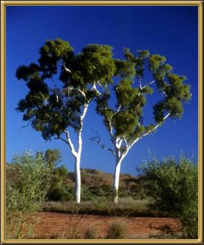

Photographer: Jerry Haberer
These twin Ghost Gums are very famous! My mother has an old black and white photo of them that she took many years ago. They're called Ghost Gums because they are so incredibly white and are very visible at night - almost glowing.